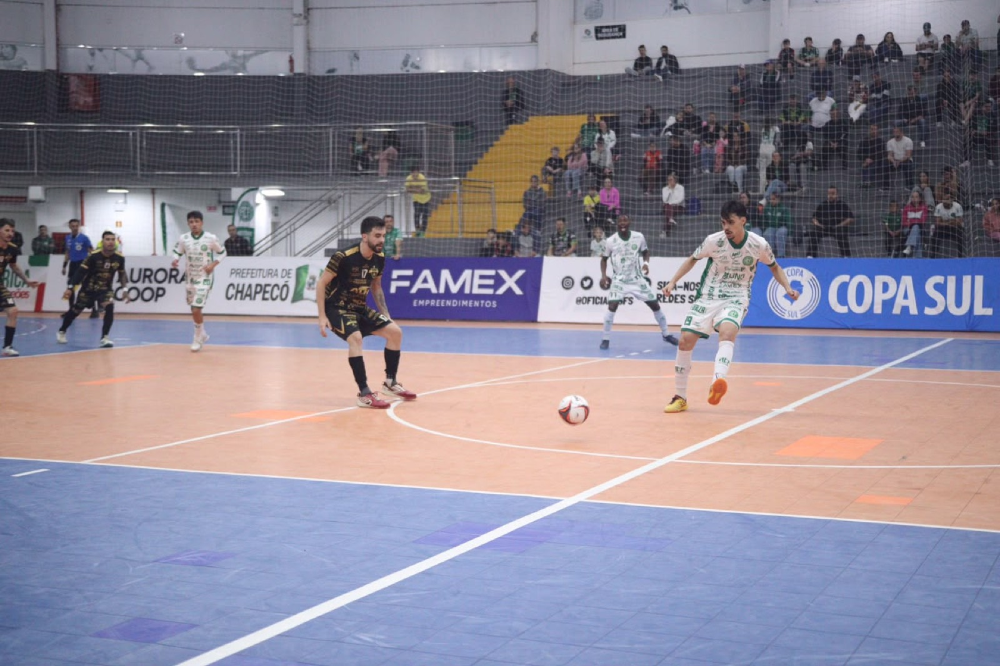

A Prefeitura de Chapecó/Chapecoense/Unochapecó se recuperou na Copa Sul de Futsal Masculino 2026. O Verdão das Quadras venceu o Caçador por 3 a 1, na noite desta quinta-feira (24), e reagiu após a derrota na estreia para o Guaporé (3 a 0). O torneio é realizado no Ginásio Ivo Sguissardi, em Xanxerê.
O Caçador surpreendeu a Chapecoense nos minutos iniciais. Aos 2’36”, Marcelinho cobrou falta e Igor Balduíno desviou para a rede: 1 a 0. O time verde-branco teve a iniciativa de jogo, mas parou na marcação do adversário no primeiro tempo. Na segunda etapa, a equipe do técnico Leo Schroeder encontrou espaço em cobrança rápida de lateral em que Ximba tocou para Kassula chegar batendo: 1 a 1.

O duelo continuou bastante movimentado, mas a rede só voltou a balançar aos 16’55 com Toninho cobrando falta entre as pernas do goleiro. Depois da virada, o clube do Meio-oeste apostou no goleiro-linha, mas a Chape Futsal marcou novamente. Aos 18'31, Kassula anotou de cabeça e fechou a contagem.
Outros três jogos movimentaram a segunda rodada. Primeiro, o Criciúma derrotou o Guarapuava (PR) por 2 a 1. Na sequência, o Campo Mourão (PR) goleou o Guaporé (RS): 6 a 0. Depois, o Passo Fundo (RS) ganhou do Jaraguá pelo placar de 3 a 2. A primeira fase termina nesta sexta-feira (25) com Guaporé x Caçador, às 14h; Passo Fundo x Criciúma, às 16h; Jaraguá x Guarapuava, às 18h; e Chapecoense x Campo Mourão, às 20h. Todos os confrontos são decisivos.
Até o momento, nenhum participante está classificado ou eliminado. No grupo 1, o Passo Fundo lidera com seis pontos, mas tem Jaraguá e Criciúma, com três, no encalço. Guarapuava ainda não pontuou. No 2, Campo Mourão é o primeiro com seis, seguido de Chapecoense e Guaporé (3). Caçador está com zero.
Crédito das fotos: @rogersilva_fotografia/@achapefutsal